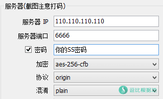
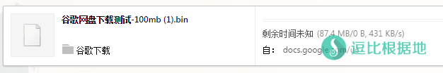
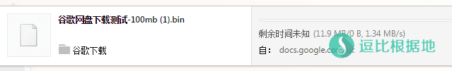

中继加速（也叫中转，因为国内VPS效果最好所以一般都叫国内中转），是一种技术难度低，但是颇费钱的一种方法。而且要选好的服务器，加速效果才明显。
HaProxy是其中的方法之一，使用方便，但是只支持TCP转发，
其他的优化方案：https://doub.io/ss-jc26/#三、优化Shadowsocks
其他的端口转发教程：https://doub.io/ss-jc26/#服务器中继（国内中转）
HaProxy便捷管理脚本：『原创』Shadowsocks HaProxy中继(中转) 便捷管理脚本
Socat：
优点：支持 TCP/UDP 转发。缺点：不支持端口段（多个端口需要开启多个转发）
HaProxy：
优点：支持 TCP 转发，支持 端口段 转发。缺点：不支持 UDP 转发。
iptables：
优点：支持 TCP/UDP 转发，支持 端口段 转发。缺点：配置麻烦，容易莫名其妙出错。
安装步骤
说他难度低也不是没有理由，看完下面的教程就知道多简单了！
以下教程，我是用的日本和美国服务器，我的Shadowsocks服务端安装在美国VPS上。
链接原理：SSR客户端 <=> 国内VPS <=> 美国VPS
安装HaProxy
# Debian/Ubuntu系统： apt-get -y install haproxy # Centos系统： yum -y install haproxy
安装完之后就是配置HaProxy的配置文件了。
配置文件
打开 /etc/haproxy/haproxy.cfg 文件。
vi /etc/haproxy/haproxy.cfg # 如果提示没有vi这个命令，请安装： # Debian/Ubuntu系统：apt-get -y install vim # Centos系统：yum -y install vim
打开后把里面的内容全部删除，换成下面的内容。
global
defaults
log global
mode tcp
option dontlognull
timeout connect 5000
timeout client 50000
timeout server 50000
frontend ss-in
bind *:6666
default_backend ss-out
backend ss-out
server server1 233.233.233.233 maxconn 20480
其中 12 行的，把 6666 改成你被中转的VPS上面Shadowsocks服务端的端口，这个端口是你要转发的端口。
然后修改一下 16 行（最后一行），把 233.233.233.233 改成你要中转(被中转/远程服务器)的 VPS IP ，（不是很懂这里的先对照下面的客户端配置，在考虑如何修改），其他的都不要动！
还有，你的中转端口和被中转端口是一致的，你的中转端口和被中转端口都是 6666 。
多端口配置
如果你需要中转多个端口，那你修改 bind 配置项为 *:端口段 格式。
也就是把连接中转VPS的 10000-30000 端口TCP数据转发到 233.233.233.233 的 10000-30000 端口上面。
frontend ss-in bind *:10000-30000 default_backend ss-out backend ss-out server server1 233.233.233.233 maxconn 20480
HaProxy 1.5版本后也支持了ipv6，把这里的 233.233.233.233 换成 ipv6地址 就行了。
然后按 Exc键 退出vi编辑模式，输入 :wq 保存并退出，并执行下面代码运行HaProxy。
# 启动haproxy /etc/init.d/haproxy start # 停止haproxy /etc/init.d/haproxy stop # 如果你是 CentOS 7 系统，那么用这些命令： # 启动haproxy systemctl start haproxy.service # 启动haproxy systemctl stop haproxy.service
执行之后不会出现任何提示，就不需要管了，可以关闭ssh软件了。
客户端配置

假设我的国内中转VPS IP是 110.110.110.110 ，我的国外被中转的VPS IP是 233.233.233.233 ，我的国外VPS上的Shadowsocks服务端 端口是 6666 ，我设置的中继账号端口是 6666 ，那么我在Shadowsocks客户端就是如上图所填。其中密码和加密方式都是和你国外VPS上的Shadowsocks账号配置一样，你只需要改一下 服务器 IP 和 服务器端口 就好了！
如果无法连接，先确认你的原Shadowsocks账号能否正常使用，然后查看防火墙规则（iptables -L -n）是否有问题。
还有需要注意的是HaProxy中继只支持TCP，也就是不支持需要UDP转发的游戏！
卸载方法
# Debian/Ubuntu 系统： apt-get -y remove haproxy # CentOS 系统： yum -y remove haproxy
然后删掉haproxy的配置文件目录
rm -rf /etc/haproxy
使用命令
启动：/etc/init.d/haproxy start 停止：/etc/init.d/haproxy stop 重启：/etc/init.d/haproxy restart 重载：/etc/init.d/haproxy reload 状态：/etc/init.d/haproxy status # 如果你是 CentOS 7 系统，那么用这些命令： 启动：systemctl start haproxy.service 停止：systemctl stop haproxy.service 重启：systemctl restart haproxy.service 状态：systemctl status haproxy.service
效果测试
上图是直接用美国VPS上的Shadowsocks账号的速度，下图是用国内中转服务器加速后的Shadowsocks账号速度，可以看出提升明显！
对了，如果你再用了其他优化方法，速度提升就更明显了！传送门


其他的端口转发教程：https://doub.io/ss-jc26/#服务器中继（国内中转）
HaProxy便捷管理脚本：『原创』Shadowsocks HaProxy中继(中转) 便捷管理脚本
其他的优化方案：https://doub.io/ss-jc26/#三、优化Shadowsocks
转载请超链接注明：逗比根据地 » Shadowsocks利用 HaProxy 实现中继(中转/端口转发)加速
责任声明：本站一切资源仅用作交流学习，请勿用作商业或违法行为！如造成任何后果，本站概不负责！


试过其他端口转发程序吗？